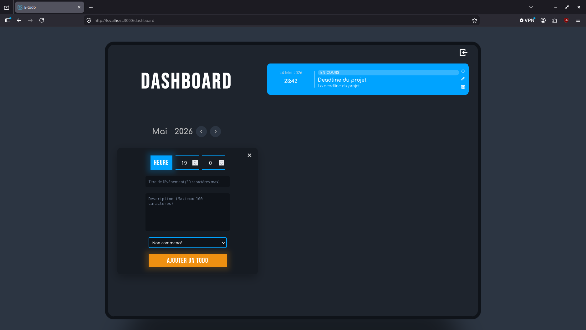
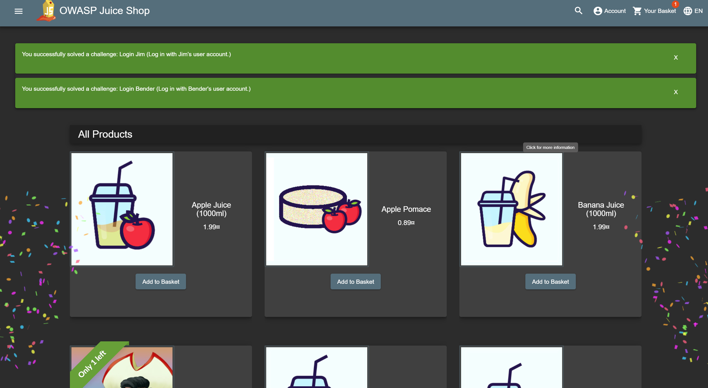
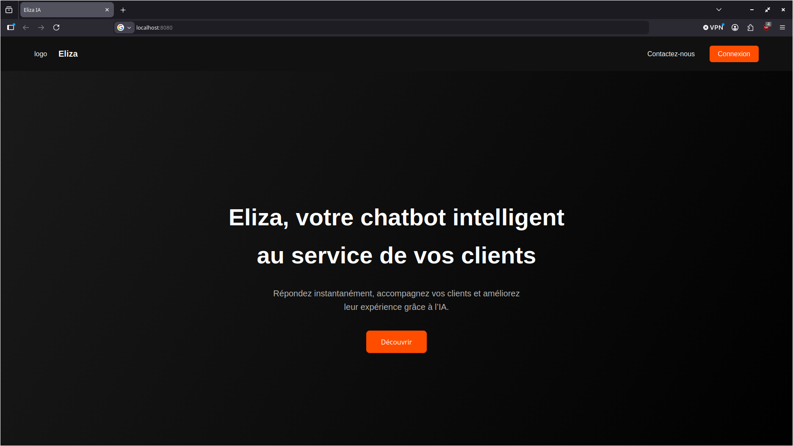
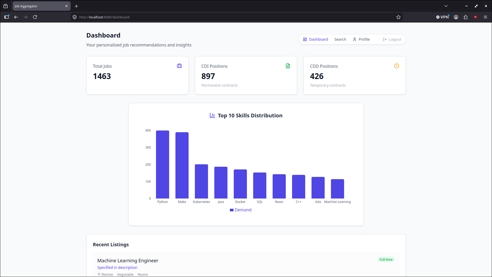

Mes compétences sont principalement orienté autour du backend, base de données et cybersécurité, en particulier le backend.
Le backend est ce que j'aime le plus. Je l'ai appris en autodidacte pour mon stage de 3ème puis pour des projets personnels (backend pour des bots, application webs, etc...) et mes compétences ont été appronfondit à Epitech avec leurs projets, qui m'ont obligé de sortir de ma zone de comfort.
Le projet de cybersécurité m'a aussi appris beaucoup sur la cybersécurité, même si j'avais vu quelques bases avant. C'est mon second meilleurs secteur après le backend.
J'ai aussi des compétences plus basiques dans d'autre secteurs, comme le frontend ou la data.
Développeur backend & Pentesteur
Étudiant en première année à Epitech
Étudiant en première année à Epitech

Premier projet web de l'année.
Objectif: faire une simple application web E-Todo fullstack avec Express et React.
Je me suis chargé de faire le backend, de la base de données et du docker, et mon collègue c'est chargé du frontend.

Objectif: On devait chercher et documenter des failles dans un site prévu pour le projet (Owasp juice shop). Dans la documentation on devait détaillé comment fonctionne la faille, sa séverité et comment prévenir le problème. Le projet avec une quota minimum de 10 failles avec une difficulté de 3 ou plus.
Notre groupe a trouvé 23 failles avec une difficulté de 3 ou plus, dont 21 ont été trouvé (et documenté) par moi (à cause expliquer par l'absence mon collègue pour des raisons valables).

Objectif: Faire un chat bot qui pourrait être utilisé par une entreprise
Notre groupe avont décidé de faire un chat bot pour répondre aux questions de client de plusieurs entreprise grâce à une base de données contenant toutes les informations nécessaire pour répondre aux questions, et en cas d'échec, rédirige vers un opérateur humain.
Je me suis chargé de faire le backend, base de donné et une partie de frontend (majoritairement les panels admin/entreprise)

Le projet final de l'année
Objectif: Notre groupe devait faire un site fullstack dans le but de aider les utilisateurs à trouver du travail, nous devions utilisé l'API WeLoveDev fournit pour la durée du projet.
Je me suis chargé de faire le backend, base de données (et chargé les données de l'API dans la base de données) et le docker
Competences
Contact